From directing a school short film to a whole province’s summer spending campaign
National University of SingaporeMSc Communication (Data track) · 2026–2027, in progress
University of AmsterdamBSc Media and Information · 2023–2026
Marketing internships at Douyin, Kuaishou and Sina Weibo; wrote several regional voucher campaign plans
A short film I wrote and directed in high school won first prize in Nanjing; at a 2025 badminton tournament in the Netherlands, my staff badge still said “directing team”
Paying for ChatGPT since 2023; building products with AI since 2026
From brand deals as a creator to brokering between governments, merchants and creators on a platform
#ShaanxiCalling joint campaign (not the lead): partnership agreement, all materials through several rounds of approval, online venue build, on-site event execution
Wrote 4 regional voucher campaign plans on my own: budget, resource mix, creator line-up, content calendar
Creator seeding: picked creators, wrote briefs, kept the main venues launching on time
Built an AI agent for regional opportunity monitoring from scratch, with a weekly regional report
Project results (whole team)
#ShaanxiCalling: reach in the hundreds of millions, Shaanxi travel searches up by more than half
3-day livestream GMV in the millions, well up year on year
Dozens of creator posts, tens of millions of views
Source: Whole-project figures, a team effort
Kuaishou
Summer 2025 · Beijing Government Relations Intern
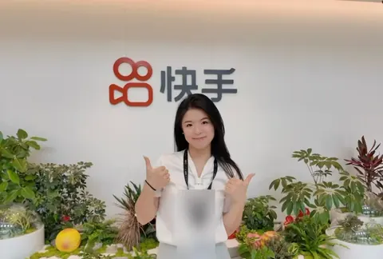
What I did
Kuaishou E-commerce “Hidden Gem Towns”, Linyi (first stop of a top-tier platform project): helped plan the launch, a 72-hour origin livestream and a truck parade
Lead writer of the Linyi wicker-craft industry sub-plan
Joined venue negotiations for the scenic-area livestream, trading platform traffic for venue access, and coordinated co-posting with local official accounts
Project results (whole team)
4.23 billion total project reach
31 Kuaishou trending topics
Source: Whole-project figures, a team effort
China Daily
Summer 2024 · Remote Overseas Social Media · New Media Intern
What I did
Pitched stories on Chinese tech and industry (e.g. China-made robot dogs) and localised them in Chinese and English
Short videos end to end: idea, script, edit, caption
Project results (whole team)
10+ TikTok videos (main account: 3.4 million followers)
13 English posts on X
Source: Public TikTok and X data
Sina Weibo
Summer 2024 · Nanjing KA Project Operations Intern
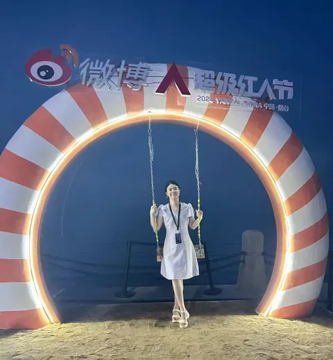
What I did
Changshu city brand project: planned offline check-in routes and online hashtag angles
Coordinated six creators with a million-plus followers each and ran the on-site agenda and KOL pacing
Topics and KOL matching for Changshu, Kunshan and Xuzhou; competitive analysis of Douyin, RED and Bilibili
Project results (whole team)
Changshu hashtag: 43.1 million reads, 10 hours on the local trending list
Two billion-plus total views across the IP matrix
Source: Weibo hashtag reads and time on the local trending list
TREASURE HAUL
The Haul · Results
Douyin figures are rounded on purpose; everything else is exact.
Hundreds of millions#ShaanxiCalling reach · whole project
Millions3-day livestream GMV
43.1MChangshu · hashtag reads
58KRED · likes on one post
115KWeChat Channels · views on one video
26countries unlocked
4internships
CAPTAIN’S LOG
Captain’s Log · Cases
Open a card to see what I did. Douyin figures are rounded, and every team result names my role.
A Weibo city campaign for the Changshu Municipal Publicity Department: creators from different fields toured the city for three days, with a salon in the middle.
3
#ChangshuInTheSpotlight: letting big creators speak for a city
City promotion’s biggest risk is talking to itself.
My roleCampaign planning; on-site salon agenda and KOL pacing; hashtag growth and tracking
Creators toured along three lines: industry, culture and ecology
A salon bringing creators, media, planners and cultural scholars onto one stage
Hashtag page, on-site photo logs, quick edits and quote posters, timed with trending lists and feeds
43.1 millionWhole project: hashtag reads, 10 hours on the local trending list
I run my own accounts on travel, studying abroad and culture, and handle ideas, scripts, filming, editing and publishing on all three platforms myself.
5
A one-person content studio: travel, studying abroad and culture
I’ve worked both sides of creator–brand deals.
My roleSolo
Three themes: travel, studying abroad, culture
Everything from idea and script to filming, editing and publishing, on three platforms
Pitched and delivered brand deals in six categories myself, closing the commercial loop
A plan for the Jiangsu Department of Ecology and Environment’s official Weibo around Biodiversity Day and National Ecology Day. If I redid it today, AIGC would draft the whole poster series.
7
13 cities, 13 species, one AIGC visual system
The hard part of environmental topics is “what has this got to do with me?”
My roleCampaign planning and writing
Each city paired with a signature species for a city poster series
Creators livestreaming science from nature reserves
#JiangsuEcoCitywalk: four routes you can actually walk
In 2023 “journalism is a dead end” kept trending. We went looking for data: admission ranks, search indices, word frequency in a Douban “regret” group, plus interviews.
9
Loud on social, low on demand: is journalism still worth studying?
Volume isn’t demand.
My roleTopic, data and lead writer
Trending discussion was loud, but search interest in the major stayed flat
Journalism admission ranks have slid since 2021, the opposite of computer science and law
Jobs dominate the “regret” group, and “switching to coding” comes up again and again
3,946 → 12,190admission rank for journalism at one leading university, over four years
The more polished the persona, the harder the fall
Copywriting creator Fang Qi’s comments on season six of a reality show were called empty; viewers then checked her famous quotes word by word and found them stitched together.
13
How a “talented writer” persona collapsed on reality TV
A persona is an asset and a liability.
My roleSolo research
Closeness: soothing one-liners make fans feel “she gets me”
Broken trust: live behaviour doesn’t match the persona, and viewers start fact-checking word by word
Algorithmic amplification: more criticism means more engagement, more reach and a faster fall
Overseas social · China Daily TikTok · Summer 2024
Same story, told for an English-speaking audience
A remote internship in China Daily’s overseas social media department, helping run the official TikTok account and turning Chinese trending stories into content for English-speaking viewers.
17
Retelling Chinese trending stories for English-speaking audiences
Not line-by-line translation: retold the way English-speaking audiences expect.
My roleNew media intern (remote)
Did everything on each short video myself: idea, script, edit and caption
Retold Chinese stories the way English-speaking viewers expect, not line by line
Built up a repeatable way of adapting stories across cultures
#ShaanxiCalling: a province’s summer travel season
A provincial summer travel-spending programme guided by the Shaanxi Department of Culture and Tourism and run by Shaanxi Tourism Group, covering sights and hotels across the province over about four months.
My role
Not the lead, but I did all of this hands-on: resource negotiations, hosting officials, the online venue and offline materials, bringing the platform’s mascot into the livestream; internal comms and video; the travel pass and travel fair; weekly project reports
Where
Douyin internship · Summer 2026
Partners
Shaanxi Department of Culture and Tourism, Shaanxi Tourism Group
What I produced
Early negotiations, securing resources with co-organisers
Itineraries and briefing packs for visiting officials
Built the online venue and worked with KOLs; designed offline materials and booths, wrote speeches and decks
Designed how the platform’s mascot joins the livestream, so viewers remember the platform
Coordinated design of display boards, leaflets, speeches and decks through several rounds of approval
Internal comms, design and video assets
Drafted the partnership agreement and saw it through to signing
Ran the livestream on the day; weekly reports and progress tracking
Project results (whole team)
Hundreds of millionstotal reach
Over halfrise in Shaanxi travel searches
Millions3-day livestream GMV, well up year on year
What I did and found
One theme, #ShaanxiCalling, carried by government accounts, media and a matrix of creators
Vouchers stacked with merchant discounts, a travel pass and perk bundles, connecting “content → claim a voucher → redeem in store → come back”
City creator parties, city livestream rooms and an online travel fair tie sights, shopping districts and merchants together
Four phases: warm-up, launch, spending peak, sustained conversion
What it means for marketingThe key to a government–business project is that every party gets what it came for: government wants visibility and spending, the state group wants visitors, merchants want sales, the platform wants supply.
City cinema vouchers · Proposal
Tianjin on Screen: getting non-moviegoers into cinemas
A cinema-voucher proposal for the Tianjin Municipal Publicity Department, using the summer, Mid-Autumn and National Day release windows and the travel expo to reach people who don’t normally go to the cinema.
My role
Proposal planning and writing
Where
Douyin internship · Summer 2026
Client
Tianjin Municipal Publicity Department
Stage
Proposal
What I produced
A complete city cinema-voucher proposal: release rounds, tiered denominations, distribution channels and a ticket-stub perk scheme
What I did and found
Rounds tied to the travel expo launch, Mid-Autumn family viewing and the National Day peak, with unused budget rolled forward based on redemption
Several denominations for solo, couple and family outings
Vouchers available at event venues, on merchant pages and in livestreams; at the expo, a livestream sells vouchers while people walk the halls
“Expo + film” ticket-stub perks that link cinema spending to city tourism
What it means for marketingA voucher’s value isn’t how many you hand out but how many people it brings in who wouldn’t have spent otherwise; release windows and occasions are how you find them.
Industry association partnership · Live shows and city spending
A concert, a trip to a city: a partnership proposal with the China Association of Performing Arts
A proposal to the China Association of Performing Arts: use concerts to lift spending across a city, and use the association’s network to bring more show organisers onto the platform.
My role
Proposal planning and writing
Where
Douyin internship · Summer 2026
Partner
China Association of Performing Arts
Stage
Partnership proposal
What I produced
Two partnership models: Concert City, and onboarding show organisers
An onboarding list across several show types and dozens of candidate productions
A merchant pitch and a write-up of what the best organisers do
What I did and found
Concert City: using a Taiyuan concert as the model, one landing page bundles tickets with food, stays and sights, merchants across the city offer stub perks, themed shuttles link shopping districts on concert day, and districts host fan events
Onboarding organisers: the association’s network turned into a prioritised list across several show types and dozens of candidate productions
Platform benefits rewritten as a pitch merchants understand: commission, traffic and marketing support, one-to-one operations help
Best practice from leading organisers (seat-picking mini-programs, official accounts with daily livestreams, staff account matrices) written into the pitch
What it means for marketingWhen a concert sells out, the city’s business is just starting: young people travel to a city for one show and spend on food, stays, transport and sights while they’re there.
Growth teardown · Pinduoduo
How Pinduoduo turns “playing a game” into “placing an order”
With a fresh account I went through every Pinduoduo game page and logged every tappable element, following where each action leads.
My role
Solo
Method
User-journey walkthrough, element count
What I produced
Tappable elements on the game pages, sorted into 4 types: 188 in total, with annotated screenshots
SourceMy own page-by-page walkthrough and count with a new account
What I did and found
51 social shares, 43 pop-up prompts, 35 check-ins, 59 limited-time deals and group-buy cashbacks
A red main button next to a small grey close button; countdown coupons play on fear of missing out
Sharing takes two steps: tap the button, land in WeChat
What it means for marketingReferral paths should be as short as possible, two steps at most; rewards should appear when the user is “almost done”; a countdown pushes decisions harder than a bigger discount.
Sample · a Pinduoduo game-page pop-up
123
Move the lens: outside is what users see, inside is what I seeTap wherever you think users are being nudged Found 0 / 3
Under the lens
1The close button is small and grey, so leaving is harder
2“Ultimate item” makes you feel you’re about to win
3A red button with a 2-second countdown pushes you to tap now
Sharing in two steps
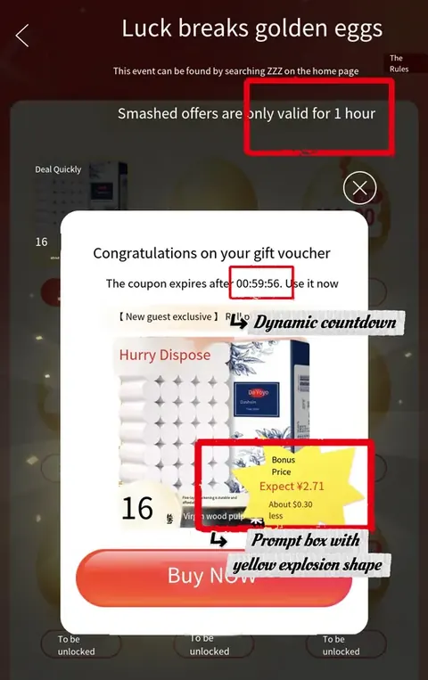
A yellow burst coupon with a countdown
City communications · Sina Jiangsu
#ChangshuInTheSpotlight: letting big creators speak for a city
A Weibo city campaign for the Changshu Municipal Publicity Department: creators from different fields toured the city for three days, with a salon in the middle.
My role
Campaign planning; on-site salon agenda and KOL pacing; hashtag growth and tracking
Where
Sina Weibo (Sina Jiangsu) internship · Summer 2024
Client
Changshu Municipal Publicity Department
What I produced
Offline check-in routes and interaction mechanics
A creator matrix and hashtag angles matched to six creators with a million-plus followers
Salon agenda and talking points; post-event hashtag growth and tracking
Project results (whole team)
43.1 millionhashtag reads
10 hourson the local trending list
6creators with a million-plus followers each
SourceWeibo hashtag reads and time on the local trending list
What I did and found
Creators toured along three lines: industry, culture and ecology
A salon bringing creators, media, planners and cultural scholars onto one stage
Hashtag page, on-site photo logs, quick edits and quote posters, timed with trending lists and feeds
What it means for marketingTurn the salon’s best lines into posters: material made for the second wave of sharing.
Campaign structure
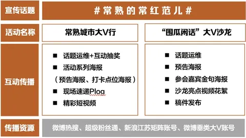
The event on one page
Personal brand · RED / WeChat Channels / Douyin
A one-person content studio: travel, studying abroad and culture
I run my own accounts on travel, studying abroad and culture, and handle ideas, scripts, filming, editing and publishing on all three platforms myself.
My role
Solo
Platforms
RED (Xiaohongshu) · WeChat Channels · Douyin
Since
December 2022
Account numbers (personal)
58Ktop single-post likes on RED
446Ktop single-video views on WeChat Channels
6M+views a year across platforms
10K+followers across platforms
SourceEach platform’s account data
What I did and found
Three themes: travel, studying abroad, culture
Everything from idea and script to filming, editing and publishing, on three platforms
Pitched and delivered brand deals in six categories myself, closing the commercial loop
What it means for marketingHaving been a creator, I write creator briefs with selling points, shot requirements and wording rules clear enough to shoot from straight away.
Government comms × AIGC · Sina Jiangsu
13 cities, 13 species, one AIGC visual system
A plan for the Jiangsu Department of Ecology and Environment’s official Weibo around Biodiversity Day and National Ecology Day. If I redid it today, AIGC would draft the whole poster series.
My role
Campaign planning and writing
Where
Sina Weibo (Sina Jiangsu) internship · Summer 2024
Client
Jiangsu Department of Ecology and Environment
What I produced
The communications plan for Biodiversity Day and National Ecology Day
Species poster concepts for 13 cities
Four ecology city-walk routes
What I did and found
Each city paired with a signature species for a city poster series
Creators livestreaming science from nature reserves
#JiangsuEcoCitywalk: four routes you can actually walk
What it means for marketingLock the series style into the prompt so the 13 images sit together; align with the client on drafts first, then refine.
If I redid it with AI today: prompts for the species posters
Yancheng · Red-crowned craneRed-crowned cranes landing on the reed marshes of Yancheng coastal wetland at dawn, soft mist, warm low sun, editorial wildlife poster, Chinese ink-wash texture blended with photography, blank space at top for a vertical Chinese title, 3:4
Nanjing · Yangtze finless porpoiseA Yangtze finless porpoise surfacing near the Nanjing riverbank, city skyline faint in the background, cool blue-green palette, same ink-wash editorial series style, space for a vertical Chinese title, 3:4
Suqian · Hongze Lake wetlandHongze Lake wetland with egrets flying over lotus fields, summer haze, consistent series style: ink-wash texture, muted greens, one bright accent, space for a vertical Chinese title, 3:4
The three campaign hooks
Topic insight · Data journalism
Loud on social, low on demand: is journalism still worth studying?
In 2023 “journalism is a dead end” kept trending. We went looking for data: admission ranks, search indices, word frequency in a Douban “regret” group, plus interviews.
My role
Topic, data and lead writer
Method
Data analysis, word frequency, interviews
SourcePublic admission data, search indices, word frequency in Douban “regret” group posts, plus interviews
What I did and found
Trending discussion was loud, but search interest in the major stayed flat
Journalism admission ranks have slid since 2021, the opposite of computer science and law
Jobs dominate the “regret” group, and “switching to coding” comes up again and again
What it means for marketingSeparate volume from demand before building a strategy; data answers “what”, interviews answer “why”.
Interest rose, then fell
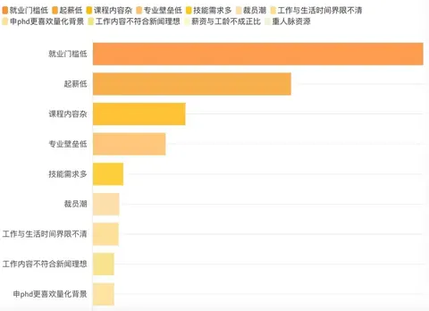
What people really worry about is jobs
Athlete brand · Douyin · Fall 2025
Building a Douyin presence for an NCAA champion
Built a Douyin presence for an NCAA men’s singles champion tennis player, leading a two-person team on ideas, content and persona.
My role
Media team lead, team of 2
Where
Atlanta (exchange semester)
When
September – December 2025
What I produced
Ideas, content and persona
13 short videos in 3 months
Account results (team)
5M+views across platforms
2,000+new followers
13short videos in 3 months
SourceAccount data, September – December 2025
What I did and found
Built the ideas and persona around being an NCAA men’s singles champion
Produced breakout champion-themed videos
Moved fans from Douyin into a private fan group, bringing in customers for a start-up
What it means for marketingAn athlete’s brand is worth more than views: bring fans into a private group and the content can lead to business.
KOL risk · Reality TV and social media
How a “talented writer” persona collapsed on reality TV
Copywriting creator Fang Qi’s comments on season six of a reality show were called empty; viewers then checked her famous quotes word by word and found them stitched together.
My role
Solo research
Subject
Reality TV and social media opinion
SourcePublic show clips and social media discussion
What I did and found
Closeness: soothing one-liners make fans feel “she gets me”
Broken trust: live behaviour doesn’t match the persona, and viewers start fact-checking word by word
Algorithmic amplification: more criticism means more engagement, more reach and a faster fall
What it means for marketingWhen picking KOLs, check whether the persona holds up across settings, and prepare a response plan before signing.
Creative basics · Copy and storyboards
Rewrites and storyboards: the basics before AIGC
Two drafts of a short story about a mother in advertising, and a storyboard rewritten as AI video prompts.
My role
Original work
Use
Copy, video scripts
What I did and found
Turned reported speech back into scenes, so readers get angry on their own
Showed emotion through a folding mirror, messy hair and lipstick, never “sobbed”
A storyboard for a Wang Wei poem, with framing, camera moves and timing set, rewritten straight into video prompts
What it means for marketingPeople who can storyboard know best what AI video is missing: rhythm and how shots relate.
Storyboard rewritten as AI video prompts
Shot
My storyboard
Video prompt
3
Medium shot, pan. The rainy season outside the window; grey sky, wet ground, kitchen smoke rising over the woods.
Medium shot, slow pan across a wooden window, rainy season, damp overcast forest, thin kitchen smoke rising above the trees, muted greens
5
Wide shot, crane up. A line of egrets flies over the paddy fields.
Wide shot, crane up over flooded rice paddies, a line of white egrets gliding across the frame, soft rain
9
Close-up, point of view. First light; the hibiscus opens.
Close-up POV, early dawn light, a hibiscus flower slowly opening, shallow depth of field, gentle mist
18
Extreme close-up. Brush characters appear one by one.
Extreme close-up, a calligraphy brush writing Chinese characters stroke by stroke on rice paper, warm candlelight, static camera
Overseas social · China Daily TikTok · Summer 2024
Retelling Chinese trending stories for English-speaking audiences
A remote internship in China Daily’s overseas social media department, helping run the official TikTok account and turning Chinese trending stories into content for English-speaking viewers.
My role
New media intern (remote)
Where
China Daily overseas social media department · June – September 2024
Account
Official TikTok account, 3.4 million followers
What I produced
10+ short videos: ideas, scripts, edits and captions
13 Chinese trending stories localised and retold in English
My content’s numbers
15Ktop single-video views
10+short videos
13localised stories
SourcePublic TikTok view counts
What I did and found
Did everything on each short video myself: idea, script, edit and caption
Retold Chinese stories the way English-speaking viewers expect, not line by line
Built up a repeatable way of adapting stories across cultures
What it means for marketingFor overseas content, first work out what the audience already knows, then decide how to tell it; the same story needs rewriting for each audience.
SEND WORD
Send Word · One problem, three audiences
A sample scenario with made-up numbers. One problem, written up three different ways.
Day 28 of a voucher campaign, and redemption is behind plan. The client, the tech team and the creators each need to hear something different.
Needs attention
081830
Weekly emailFor the clientThey need to know where things stand
To
Client project team
Subject
Redemption update and next steps
Claims are normal, but redemption is about 17 points behind, mainly because tourism spending bunches at weekends and some merchants are new to redeeming. We have called every merchant and added expiry reminders, and will send you a new forecast before Friday.
TicketFor the tech teamThey need something they can build today
Trigger
48 hours before the voucher expires
Audience
Users who paid but have not redeemed
Content
One reminder push with the voucher value and store link
Ship
By 18:00 Friday
Tracking
Separate push visits from organic visits
Check
Next day, compare redemption rates
Script cardFor the creatorsThey need one line they can actually say
¥50 off every ¥200, valid Friday to Sunday. Your voucher’s about to expire, so use it if you’ve got one.
WhenOne mention in Friday’s livestream
On screenShow the voucher link
Don’t say“Lowest price anywhere”
NOVICE VILLAGE
Starter Village · Nanjing
Hosting and storytelling since I was small. Achievements packed before setting sail.
★
Head of the school TV station
A nationally recognised student club; I ran it from 2022
★
Short film, first prize
Wrote and directed a short film that won first prize among Nanjing school TV stations
On Xuexi Qiangguo
Wrote and directed a stage play for the Nanjing Education Bureau’s first-day-of-school lesson
★
Graduation ceremony director
Coordinated 5 departments and 200 staff, and made 5 videos
★
New Year’s Eve recital
Helped plan a Jiangsu Broadcasting New Year’s Eve recital, watched live by over 20,000 people
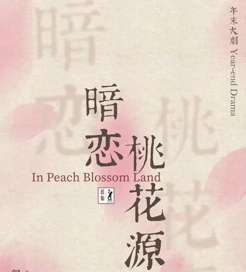
Theatre director
Directed Secret Love in Peach Blossom Land for my university drama club, to an audience of 500+; I also made the poster, tickets, stills and trailer
SEA CHART
Sea Chart · 26 countries visited
China plus 25 countries. Tap a country to fly there, tap a photo pin to open its save file, and drag the timeline to see each year light up.
26 countries unlocked
2019
2023
2024
2025
2026
FIRST VOYAGE
First Voyage · Amsterdam
I did my bachelor’s in Amsterdam. Content, film, the stage: I did each of them here for the first time.
Late 2022 · Content creator
First time on the side that gets the ad money
Three platforms, RED (Xiaohongshu), WeChat Channels and Douyin, with every idea, shoot and edit done myself. I took paid work from study-abroad services and an AI reading app, and turned down supplement mail-order brands.
Film promotion · Netherlands
Telling people in the Netherlands about Chinese films
I helped the distributor promote Detective Chinatown 1900, Ne Zha 2 and Night King in Dutch cinemas: promo copy, screening invitations and video edits. For Ne Zha 2 the angle was students abroad and their parents:
Seeing the world from our parents’ shoulders / in Chinese families, being lifted up is a baton passed down the generations
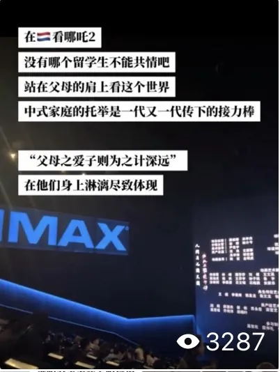
Hosting · On camera
Stepping in front of the camera
Hosted the Netherlands-wide Chinese Spring Festival Gala two years running; co-hosted Hainan’s “Nihao China · Sunny Hainan” European showcase in Chinese and English; as a University of Amsterdam international student ambassador, planned and appeared in official content and hosted live Q&As in English.
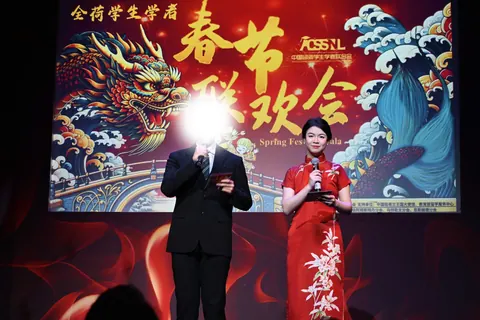
Spring Festival Gala · Host
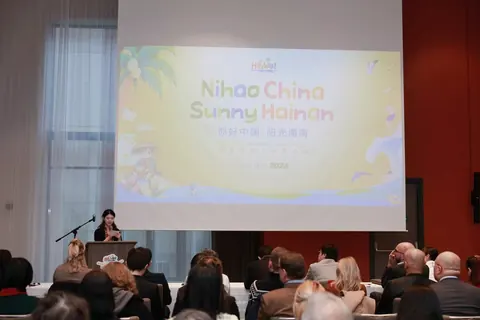
Nihao China · Sunny Hainan · Showcase
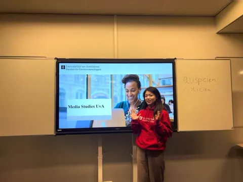
UvA student ambassador
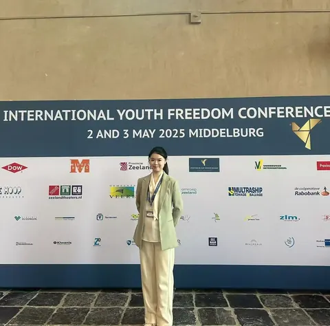
Middelburg · 2025
SPYGLASS
Spyglass · Through my lens
Want to get to know me? Start here: I’m always taking photos, I spend weekends on the badminton court, and now and then I post something.
Photography · Me, mid-shot
01 / 06Amalfi · 2019
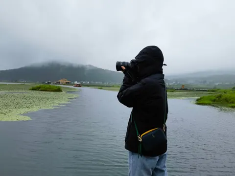
02 / 06Rain · by the lake
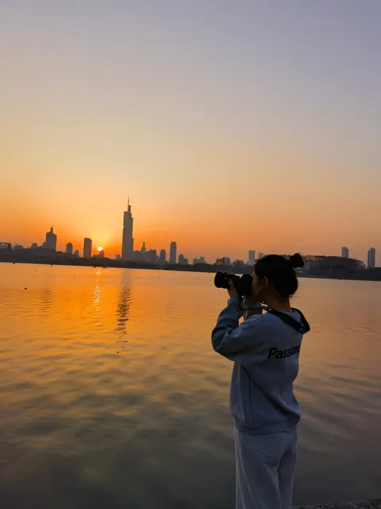
03 / 06Xuanwu Lake · Nanjing
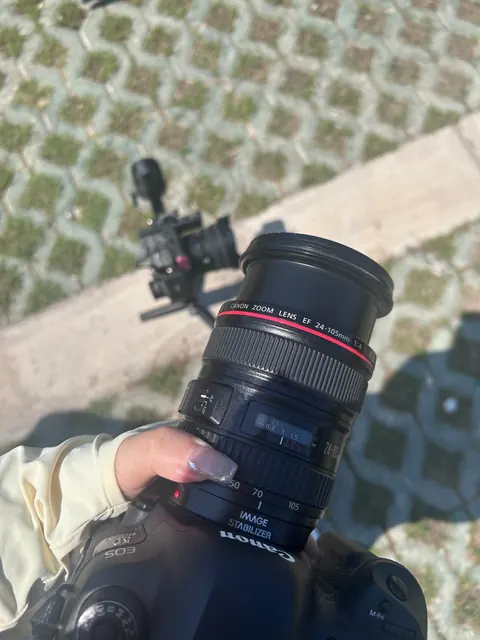
04 / 06Canon 5D05 / 06Fujifilm X-T30
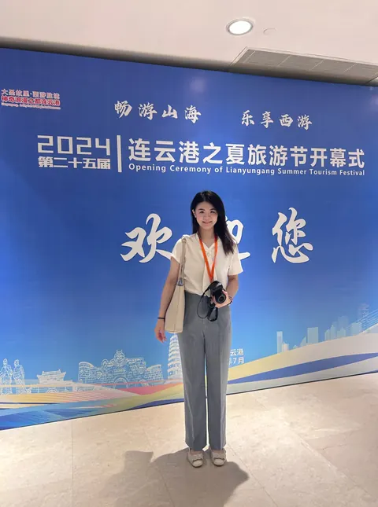
06 / 06Lianyungang · 2024
Badminton and ambassador work · 2025
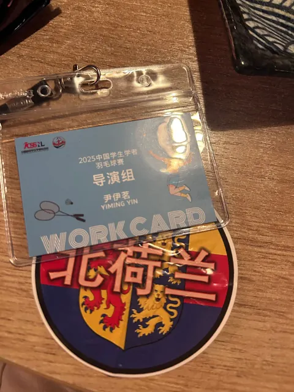
Organising team · North Holland
2025 Chinese students’ badminton tournament · Netherlands
Running the schedule off court, playing on it
On the organising team I built the schedule, ran promotion and umpired and kept score; I also played for the North Holland team.
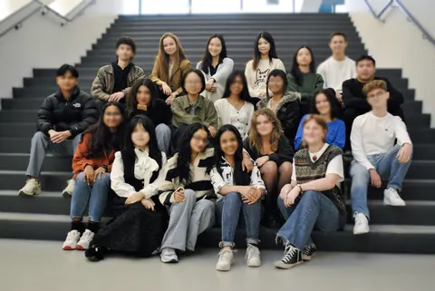
UvA student ambassador
University of Amsterdam · team photo
Telling future students about the university
As an international student ambassador I planned and appeared in official content, hosted live sessions in English, and gave talks to younger students.
Messages in Bottles · My posts
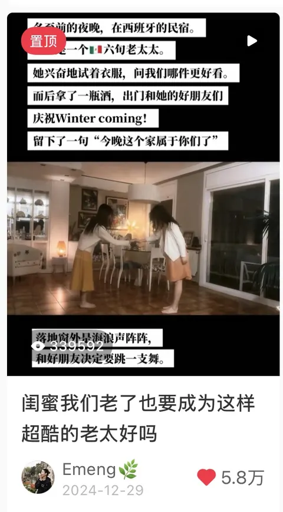
RED
Bestie, promise me we’ll be cool old ladies like this
58K likes
SIGNAL THE SHIP
Signal the Ship · Say hello
Copy my WeChat ID or email and mention you found me here.